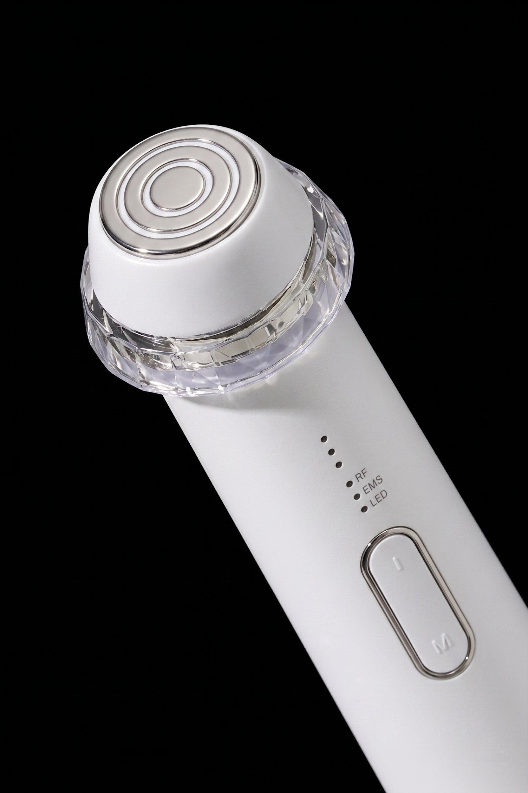

NEWCHAE · BRITZMEDI
User Manual · 2026
NEWCHAE
Complete guide to your NEWCHAE SHOT — device parts, operation, modes, precautions, and product specifications.

Complete guide to your NEWCHAE SHOT — device parts, operation, modes, precautions, and product specifications.

Press and hold the M button for 1–2 seconds to toggle vibration on or off.
When the battery is low, the LEDs will blink when you try to power on, but the device will not start. Please charge before use.

Delivers multi-channel high-frequency energy deep into the skin to help with volume management. Recommended 2–3 times per week, up to 10 minutes per session.

Medium-frequency electrical energy is delivered to the skin to help improve skin elasticity and contour management. Recommended 2–3 times per week, up to 10 minutes per session.

Various electrical energies aid in the absorption of active ingredients in cosmetics. Recommended 2–3 times per week, up to 10 minutes per session.

Q1. Can I use the device every day?
Yes. We recommend adjusting time and frequency to your skin condition. Generally, use each mode 2–3 times per week.
Q2. How do I clean the device?
Wipe the electrode head with a wet tissue, then dry gently with a soft cloth or towel.
Q3. I am pregnant. Can I use it?
Pregnant women and children are advised not to use the device. Consult your physician before use.
Q4. How long should I use per day?
Recommended daily usage is 10 minutes. Adjust based on your skin condition.
Q5. Must I use NEWCHAE Cream?
Other products may work, but may reduce RF energy delivery. NEWCHAE Cream is formulated to enhance energy delivery and active ingredient penetration.
Q6. How is NEWCHAE different from other RF devices?
NEWCHAE uses multi-channel technology from professional products for deeper, more concentrated energy. EMS medium-frequency maintains elasticity longer. ELP enhances active ingredient penetration.
Q7. The device won't turn on.
Charge the device, or disconnect the cable if already charging. If the issue persists, contact customer service. Warranty: 1 year from purchase.
Q8. I don't feel vibration.
Press and hold the M button for 1–2 seconds to toggle vibration. All modes work normally even without vibration.